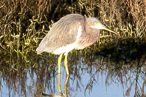

These photographs accompany records that have been recently submitted to the committee. This record has been ACCEPTED.

Tricolored Heron
Egretta tricolor
19 Nov 97, Bolsa Chica, ORA 1998-004
© 1997 Mike San Miguel
Back to CBRC Rare Bird Photos